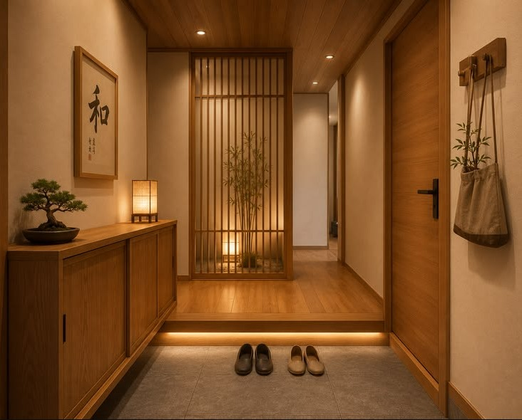

Kenapa maner begitu penting?
Orang Jepang dibesarkan dengan satu prinsip: jangan merepotkan orang lain, atau dalam bahasa Jepangnya 迷惑をかけない (meiwaku o kakenai). Kereta yang sunyi, jalanan bersih, dan antrean rapi adalah hasil dari kebiasaan kecil yang dijaga bersama.
Dua nilai lain yang sering muncul adalah 和 (wa, harmoni kelompok) dan 思いやり (omoiyari, kepedulian terhadap perasaan orang lain). Kalau kamu menyimpannya di kepala, sebagian besar aturan di bawah ini akan terasa masuk akal.
Salam dan membungkuk (お辞儀)
Membungkuk adalah "jabat tangan" orang Jepang. Dalam salam, perkenalan, minta maaf, bahkan berterima kasih, tubuh ikut bicara. Semakin dalam bungkukan, semakin tinggi rasa hormatnya.
 Klik untuk unggah foto
Klik untuk unggah foto| Jenis | Sudut | Dipakai saat |
|---|---|---|
| 会釈 eshaku | ±15° | Berpapasan dengan rekan, salam ringan di koridor. |
| 敬礼 keirei | ±30° | Bertemu atasan atau tamu, perkenalan di kantor. |
| 最敬礼 saikeirei | ±45° | Minta maaf dengan sungguh-sungguh atau terima kasih yang dalam. |
Frasa yang wajib dikuasai
| Situasi | Kalimat | Artinya |
|---|---|---|
| Pagi hari | おはようございます ohayō gozaimasu | Selamat pagi. Dipakai di kantor sepanjang hari bagi yang baru datang. |
| Perkenalan & minta tolong | よろしくお願いします yoroshiku onegaishimasu | Mohon bantuannya. Frasa serbaguna yang paling sering dipakai. |
| Menyapa rekan | お疲れ様です otsukaresama desu | Terima kasih atas kerja kerasnya. Dipakai saat berpapasan atau mengakhiri tugas. |
| Pulang lebih dulu | お先に失礼します osaki ni shitsurei shimasu | Maaf, saya pulang duluan. |
| Permisi / maaf / terima kasih | すみません sumimasen | Satu kata, tiga fungsi. Pakai saat memanggil pelayan, minta maaf, atau sekadar berterima kasih. |
Di rumah dan tempat umum
Rumah Jepang punya batas yang jelas antara "luar yang kotor" dan "dalam yang bersih". Batas itu bernama 玄関 (genkan), area kecil di pintu masuk yang lantainya lebih rendah.

Klik untuk unggah foto- Lepas sepatu di genkan, jangan melangkah ke lantai dalam dengan sepatu.
- Naik ke lantai, lalu berbalik dan rapikan sepatu agar ujungnya menghadap pintu.
- Pakai sandal rumah (スリッパ), tetapi lepas sandal sebelum menginjak tatami.
- Sandal toilet terpisah. Ganti dengan sandal khusus di toilet dan kembalikan saat keluar.
Di tempat umum
Lakukan
- Bicara dengan suara pelan.
- Antre di garis yang tersedia.
- Bawa pulang sampahmu sendiri.
- Tutup mulut saat batuk atau bersin, pakai masker saat flu.
Hindari
- Berjalan sambil makan di jalan ramai.
- Membuang sampah sembarangan (tong sampah umum sangat sedikit).
- Memberi tip di restoran atau taksi, karena tidak ada budaya tip.
- Menunjuk orang dengan jari.
Etika makan
Makan di Jepang punya ritual pembuka dan penutup. Sebelum makan ucapkan いただきます (itadakimasu), yang berarti "saya menerima makanan ini dengan syukur". Setelah selesai ucapkan ごちそうさまでした (gochisōsama deshita), tanda terima kasih untuk hidangan dan orang yang menyiapkannya.
 Klik untuk unggah foto
Klik untuk unggah fotoPantangan memakai sumpit (箸)
| Larangan | Alasannya |
|---|---|
| 立て箸 tatebashi | Menancapkan sumpit tegak di nasi. Menyerupai persembahan dupa untuk orang meninggal. |
| 箸渡し hashiwatashi | Mengoper makanan dari sumpit ke sumpit. Mirip ritual memindahkan tulang saat kremasi. Pindahkan lewat piring. |
| 刺し箸 sashibashi | Menusuk makanan dengan sumpit seperti garpu. Dianggap tidak sopan. |
| 迷い箸 mayoibashi | Menggoyang sumpit ragu memilih lauk. Putuskan dulu baru ambil. |
Hal yang justru wajar: menyeruput mi seperti ramen atau soba dianggap tanda enak dan menjaga mi tetap hangat. Minum sup miso langsung dari mangkuk juga normal.
Naik kereta dan transportasi umum
Kereta adalah panggung maner paling terlihat di Jepang. Di jam sibuk ribuan orang berbagi ruang sempit, namun suasana tetap tenang karena semua orang menahan diri.
 Klik untuk unggah foto
Klik untuk unggah foto- Antre mengikuti tanda di peron. Berdiri di garis yang ditentukan, biarkan penumpang turun dulu sebelum naik.
- Ponsel ke mode manner (マナーモード). Jangan menelepon di dalam kereta. Dekat kursi prioritas (優先席), ikuti petunjuk yang tertera dan matikan atau senyapkan ponsel.
- Suara pelan. Percakapan dengan teman boleh, tetapi jangan keras. Musik dari earphone harus tidak bocor.
- Tas di depan atau di rak. Lepas ransel dan pangku saat kereta penuh agar tidak mengenai orang lain.
- Beri tempat duduk kepada lansia, ibu hamil, penyandang disabilitas, dan orang dengan anak kecil.
Maner di dunia kerja
Di tempat kerja, maner adalah bagian dari penilaian. Tepat waktu, komunikasi yang rapi, dan sikap hormat terhadap senior sering lebih dahulu dilihat daripada kemampuan teknis.
 Klik untuk unggah foto
Klik untuk unggah fotoHo-Ren-Sō (報連相)
Singkatan dari 報告 (hōkoku, melapor), 連絡 (renraku, memberi kabar), dan 相談 (sōdan, berkonsultasi). Lapor hasil kerja, kabari bila ada perubahan atau keterlambatan, dan tanyakan sebelum kamu ragu. Atasan di Jepang lebih menghargai orang yang bertanya sejak awal daripada yang diam lalu salah.
Bertukar kartu nama (名刺交換)
Kartu nama atau 名刺 (meishi) dianggap cerminan diri dan perusahaanmu, jadi memberi dan menerimanya punya tata cara sendiri. Pertukaran kartu biasanya terjadi di awal pertemuan, sebelum duduk atau sebelum rapat dimulai.

- Siapkan sebelum bertemu. Bawa kartu yang bersih dan tidak kusut di tempat kartu (名刺入れ meishi-ire), simpan di saku dada atau tas yang mudah dijangkau.
- Berdiri dan hadap lawan bicara. Pertukaran dilakukan sambil berdiri, bukan sambil duduk atau dari seberang meja.
- Siapa yang memberi lebih dulu. Biasanya pihak yang berkunjung atau yang jabatannya lebih rendah. Jangan menunggu bila kamu junior.
- Berikan dengan dua tangan. Pegang di sudut bawah kartu, arahkan tulisan menghadap penerima agar langsung terbaca, lalu sebutkan perusahaan dan namamu: 〇〇社の〇〇と申します。よろしくお願いいたします (... to mōshimasu, yoroshiku onegai itashimasu).
- Terima dengan dua tangan sambil sedikit membungkuk dan ucapkan 頂戴いたします (chōdai itashimasu, saya terima). Bila bertukar bersamaan, berikan kartumu dengan tangan kanan dan terima dengan tangan kiri, lalu segera pegang dengan dua tangan.
- Baca dulu. Lihat nama dan jabatan, dan jika sulit dibaca, tanyakan cara melafalkannya dengan sopan. Jangan langsung dimasukkan ke saku.
- Saat rapat, letakkan kartu di meja di depanmu, di atas tempat kartu, sesuai urutan tempat duduk agar mudah mengingat nama. Setelah selesai, simpan dengan hati-hati ke tempat kartu.
Lakukan
- Bawa lebih banyak kartu daripada yang diperkirakan.
- Perlakukan kartu orang lain seperti orangnya sendiri.
- Jika kehabisan atau lupa membawa, minta maaf: 名刺を切らしております.
Hindari
- Memasukkan kartu ke saku belakang celana.
- Menulis, melipat, atau memainkan kartu di depan orangnya.
- Menyodorkan kartu dengan satu tangan atau melemparkannya ke meja.
Aturan emas di kantor
| Hal | Yang diharapkan |
|---|---|
| Waktu | Datang 5 sampai 10 menit sebelum jam kerja. Datang tepat waktu sering dianggap sudah terlambat. Pembahasan lengkapnya ada di bab berikutnya. |
| Kartu nama (名刺) | Berikan dan terima dengan dua tangan, baca dengan hormat, simpan di tempat kartu. Jangan langsung masuk saku atau dicoret. Tata caranya dibahas di atas. |
| Pakaian | Rapi dan bersih. Ikuti seragam atau aturan perusahaan, hindari wewangian kuat. |
| Bahasa | Pakai bentuk sopan (〜です／〜ます) pada atasan dan rekan yang belum akrab. |
| Mengakui salah | Minta maaf cepat dengan 申し訳ありません, jelaskan singkat, lalu sampaikan cara memperbaiki. |
Menepati waktu (時間厳守)
Di Jepang, waktu adalah milik bersama. Terlambat berarti mencuri waktu orang lain, dan itu bentuk nyata dari 迷惑 (meiwaku). Karena itu menepati waktu, atau 時間厳守 (jikan genshu), dianggap dasar kepercayaan: orang yang disiplin soal waktu dinilai bisa diandalkan dalam hal lain.
Artinya "bertindak lima menit lebih awal". Ini kebiasaan yang diajarkan sejak sekolah dan dipakai di dunia kerja: siap sebelum waktunya, bukan baru berangkat saat waktunya tiba.
Jadwal kereta di Jepang disusun per menit, dan orang menyusun hari mereka mengikuti jadwal itu. Bila kereta terlambat, perusahaan kereta biasanya meminta maaf lewat pengumuman dan bisa memberi 遅延証明書 (chien shōmeisho, surat keterangan keterlambatan) yang dapat ditunjukkan ke kantor atau sekolah. Artinya, bahkan alasan yang sah pun tetap perlu dilaporkan.
Kapan harus tiba?
| Situasi | Yang diharapkan |
|---|---|
| Masuk kerja | Tiba 5 sampai 10 menit sebelum jam mulai, sudah siap di meja saat jam mulai. Jam mulai adalah waktu mulai bekerja, bukan waktu tiba. |
| Rapat | Duduk di tempat sebelum rapat dimulai, bawa catatan dan bahan. Rapat juga diharapkan selesai tepat waktu. |
| Kunjungan ke kantor klien | Tiba di sekitar gedung lebih awal, tetapi masuk ke resepsionis sekitar 5 menit sebelum janji. Terlalu awal bisa mengganggu persiapan tuan rumah. |
| Wawancara kerja | Tiba di area gedung 15 sampai 20 menit lebih awal, lapor ke resepsionis sekitar 5 sampai 10 menit sebelum jadwal. |
| Berkunjung ke rumah orang | Datang tepat waktu, jangan terlalu awal. Tuan rumah mungkin masih menyiapkan sesuatu. |
| Acara makan bersama (飲み会) | Tiba sebelum jam kumpul, terutama bagi junior. Jangan membuat senior menunggu. |
| Tenggat kerja (納期) | Selesaikan sebelum tenggat. Jika ada risiko terlambat, kabari jauh hari lewat Ho-Ren-Sō. |
Kalau terpaksa terlambat
- Kabari sebelum waktunya tiba, bukan setelah. Telepon atau kirim pesan segera setelah kamu tahu akan terlambat.
- Sebut perkiraan jam tiba dengan jelas, misalnya "sekitar pukul 9.20", agar orang lain bisa menyesuaikan rencana.
- Minta maaf dengan singkat: 遅れて申し訳ありません (okurete mōshiwake arimasen). Saat tiba, ucapkan お待たせして申し訳ありません (omatase shite mōshiwake arimasen).
- Jelaskan alasan secukupnya, tanpa berbelit atau menyalahkan pihak lain, lalu langsung lanjutkan pekerjaan.
- Jangan jadikan kebiasaan. Satu kali keterlambatan yang dilaporkan dengan baik bisa dimaklumi, tetapi berulang kali akan merusak kepercayaan.
Lakukan
- Berangkat lebih awal dan sediakan waktu cadangan.
- Cek rute dan jadwal kereta malam sebelumnya.
- Kabari lebih dulu bila akan terlambat.
- Akhiri rapat dan acara sesuai jadwal.
Hindari
- Tiba tepat di menit pertama lalu baru bersiap.
- Terlambat tanpa kabar sama sekali.
- Datang terlalu awal ke rumah orang.
- Memakai alasan "jam karet" sebagai hal biasa.
Kebiasaan ini mungkin terasa ketat bagi yang terbiasa dengan jadwal longgar, tetapi bisa dilatih. Mulailah dari hal kecil: tentukan jam berangkat dengan menghitung mundur dari lima menit sebelum waktu janji, bukan tepat di waktunya.
Pertanyaan yang sebaiknya tidak diajukan
Orang Indonesia terbiasa membuka obrolan dengan "umurnya berapa?", "sudah menikah?", atau "gajinya berapa?". Di Jepang, pertanyaan seperti itu bisa terasa terlalu pribadi, terutama kepada orang yang baru dikenal, kepada wanita, dan kepada atasan. Alasannya sederhana: urusan pribadi dianggap wilayah masing-masing, dan menanyakannya bisa membuat lawan bicara tidak nyaman.
 Klik untuk unggah foto
Klik untuk unggah fotoHindari bertanya tentang
- Umur (年齢), terutama kepada wanita dan senior.
- Gaji (給料) dan harga barang pribadi.
- Status menikah, punya anak atau belum.
- Berat badan dan penampilan fisik.
- Agama dan pandangan politik di obrolan pertama.
Topik yang aman
- Cuaca dan musim (今日は暑いですね).
- Daerah asal: ご出身はどちらですか.
- Hobi: ご趣味は何ですか.
- Makanan dan tempat makan favorit.
- Pekerjaan secara umum, tanpa menyinggung gaji.
Di kantor, urutan hormat biasanya ditentukan oleh senior dan junior (先輩・後輩 senpai, kōhai) berdasarkan tahun masuk perusahaan, bukan umur. Jadi kamu tidak perlu menanyakan umur untuk tahu harus bersikap bagaimana. Kalau memang perlu, awali dengan 失礼ですが (shitsurei desu ga, "maaf kalau lancang") lalu おいくつですか, dan terima jika orang itu menolak menjawab.
Honne dan Tatemae: yang dirasakan dan yang diucapkan
本音 (honne) adalah perasaan atau pendapat yang sebenarnya, sedangkan 建前 (tatemae) adalah sikap dan ucapan yang ditampilkan di depan umum demi menjaga harmoni. Tatemae bukan kebohongan jahat. Ia dipakai agar tidak ada yang kehilangan muka dan suasana tetap nyaman.
 Klik untuk unggah foto
Klik untuk unggah fotoUcapan yang sering bukan arti harfiahnya
| Ucapan | Arti harfiah | Maksud yang mungkin |
|---|---|---|
| 検討します kentō shimasu | Akan kami pertimbangkan. | Bisa serius dipertimbangkan, tetapi sering berarti "kemungkinan besar tidak". |
| ちょっと難しいですね chotto muzukashii desu ne | Agak sulit, ya. | Hampir pasti "tidak bisa". Jarang diikuti kata "tidak". |
| また今度 mata kondo | Lain kali. | Bisa tulus, bisa penolakan halus. Perhatikan apakah ada tanggal pasti. |
| ぜひ遊びに来てください zehi asobi ni kite kudasai | Silakan main ke rumah. | Sering hanya basa-basi. Undangan serius biasanya menyebut hari dan jam. |
| いいですね ii desu ne | Bagus, ya. | Bisa setuju, bisa sekadar sopan. Lihat nada dan lanjutannya. |
Cara menyikapinya
- Baca suasana (空気を読む kūki o yomu). Perhatikan nada, jeda, dan ekspresi, bukan hanya kata-kata.
- Hindari "tidak" yang langsung. Gunakan ちょっと… atau 難しいかもしれません lalu tawarkan alternatif.
- Klarifikasi dengan sopan. Tanyakan hal konkret seperti tanggal, jumlah, atau langkah berikutnya, alih-alih menebak.
- Jangan memaksa honne keluar. Pendapat jujur biasanya muncul di obrolan akrab, misalnya saat makan atau minum bersama rekan (飲み会), tetapi tetap jaga batas dan hormat.
Tiga belas kebiasaan yang paling sering dinilai
- Membungkuk dan menyapa dengan suara jelas setiap hari.
- Terapkan 5分前行動: tiba lima menit lebih awal, jangan terlambat.
- Kalau terlambat, kabari sebelum waktunya dan minta maaf dengan singkat.
- Lepas sepatu di genkan dan pakai sandal yang sesuai.
- Ucapkan itadakimasu dan gochisōsama.
- Jangan melakukan pantangan sumpit.
- Pelankan suara dan senyapkan ponsel di kereta.
- Bawa pulang sampah dan pilah sesuai aturan wilayah.
- Terapkan Ho-Ren-Sō: lapor, kabari, konsultasi.
- Beri dan terima kartu nama dengan dua tangan, baca dulu sebelum disimpan.
- Saat salah, minta maaf cepat dan perbaiki.
- Jangan tanya umur, gaji, atau status pernikahan. Pilih topik aman.
- Pahami honne dan tatemae, dan baca suasana sebelum mengambil kesimpulan.
Siap belajar budaya dan bahasa Jepang?
Pembelajaran maner dan budaya kerja adalah bagian dari program pelatihan kami. Silakan konsultasi kapan saja.
Isi Formulir Pendaftaran